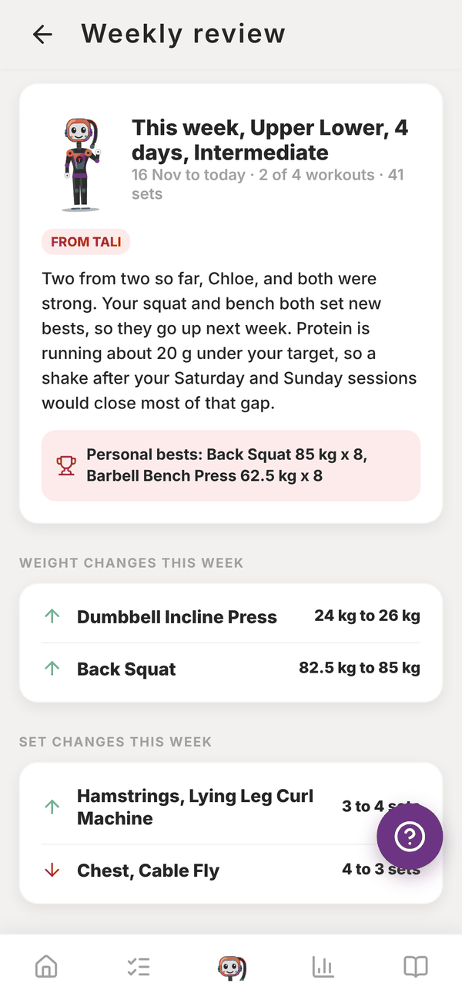

Totality Training guide
How your weights and sets adjust
The rules the app uses to move your weights and your sets, so you can see why each change happened.
Training Totality Training changes your programme from what you log. The rules are fixed and the same for everyone, so you can always see why something changed. They run after every workout you save.
Weights#
These look at your two most recent workouts on an exercise in the last 4 weeks, at the same top weight, with at least 2 sets.
- Goes up. You hit the top of the rep range on every set, two workouts running, and did not rate it a maximum effort. Next time the weight goes up by your usual jump, filled in for you.
- Eases back. At least half your sets were under the bottom of the range, two workouts running. Next time it eases back so every set lands in the range again.
- Stalled. The same weight for four workouts and your reps have not moved. The rep target changes, for example from 3 sets of 8 to 10 to 2 sets of 10 to 12, and Tali tells you on Home.
The jump up is the smallest jump you have made on that exercise before, so it matches your dumbbells or the machine stack. Cardio and timed work never gets a weight change. When it is rated easy twice, the app suggests a little more time instead.
Sets#
After each workout you answer How did that feel? for each muscle. See After a workout.
- One set less when the muscle is still sore, or the workout felt like too much.
- One more set when the muscle was never sore or healed early, and the workout felt easy, or it felt pretty good with a low pump.
- No change for anything else.
A set is added to the exercise with the fewest sets for that muscle, and taken off the last one that has more than the minimum. An exercise stays between 2 and 6 sets, and no set is added once a muscle has 12 sets in a workout.
Missed workouts#
If the same workout is missed three weeks running, Tali suggests changing your training days or picking a programme that fits your week.
Where you see the changes#
- On Home, in Tali's note.
- On the summary after a workout.
- In the Weekly review, under Weight changes this week and Set changes this week.

Questions#
Does this use AI?
No. The rules above run the same way on Training and Training + AI. On Training + AI, Tali also explains the changes in her own words.
A new weight is too heavy.
Change it on the workout screen. The next change is worked out from what you actually log.